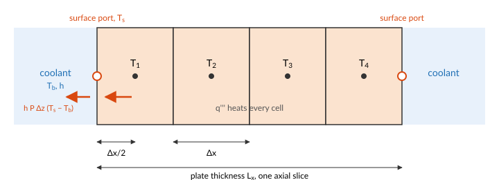
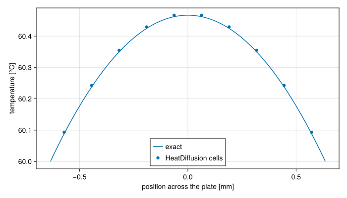
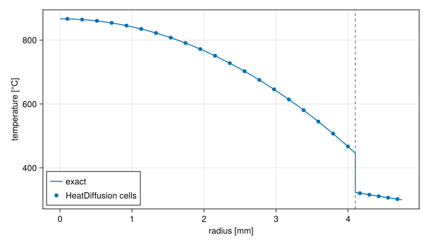

Heat conduction in fuel
The heat fuel generates has to conduct to its surface before the coolant can take it. HeatDiffusion models this for two shapes: a plate, described by a Slab, and a rod or an annulus, described by a Cylinder. Either is cut into a 2D mesh of cells, across the fuel and along it, and each cell can be a different Solid.
The heat equation
Heat in a solid flows down the temperature gradient, at a rate set by the conductivity $κ$: Fourier's law, $\mathbf{q}'' = -κ\,\nabla T$. Energy conservation in a small volume says its stored heat changes by what conducts in, less what conducts out, plus what it generates at the volumetric rate $q'''$:
\[ρ\,c_p\,\frac{\partial T}{\partial t} = -\nabla\cdot\mathbf{q}'' + q''' = \nabla\cdot(κ\,\nabla T) + q'''.\]
Fuel is thin across and long along. A plate is about a millimetre thick and hundreds of millimetres long; a temperature difference across its thickness drives heat through a path a few hundred times shorter, and a few hundred times wider, than the same difference along its length, so conduction across the fuel outweighs conduction along it by the square of that ratio. By default each axial slice conducts across only, and the slices are independent. axial=true adds conduction along the fuel, which matters where the axial temperature gradient is steep: at the ends of the heated length, or beside a partly inserted control rod.
Finite volumes
Integrating the heat equation over a cell turns the divergence into the heat flowing through the cell's faces. Each cell's temperature, at its centre, then obeys
\[ρ\,c_p\,V\,\frac{dT}{dt} = \sum_f \frac{A_f\,(T_f - T)}{R_f} + P\,s,\]
where the sum runs over the cell's faces, $A_f$ is a face's area, $T_f$ the temperature on its far side, $P$ the total power and $s$ the cell's share of it, the power_shape.

$R_f$ is the thermal resistance per unit area between the two centres. Each cell contributes the half of its width that lies on the face's side, over its own conductivity, and a contact between them adds its own resistance $1/h$:
\[R_f = \frac{Δx_a}{2\,κ_a} + \frac{1}{h_f} + \frac{Δx_b}{2\,κ_b}.\]
This is what lets the materials differ from cell to cell. The heat crossing a face between meat and cladding meets the meat's resistance over half the meat cell and the cladding's over half the cladding cell, in series, which is exact for a steady flux. With perfect contact, $h = ∞$, the middle term vanishes. A finite $h$ stands for a real interface: the gas gap between a fuel pellet and its cladding, or an imperfect bond between meat and clad.
A face on the outside of the fuel is a port. Its resistance is the outer cell's half width alone, and $T_f$ is the temperature of the ThermalPort there. The fuel does not decide that temperature. A coolant channel shares the port, and states the convective heat flow through it, $h\,P_h\,Δz\,(T_s - T_b)$; the connection makes the two heat flows cancel. The solver finds the surface temperature at which conduction to the surface equals convection away from it.
A port left unconnected carries no heat, so it is adiabatic. For that balance to describe one surface, a plate's width $y$ must be the heated width of the channel face it touches. symmetric_plate, plate and fuel_assembly join a plate to its channels, cell by cell, and need it to have as many axial cells as the channels have.
Plates and rods
The two shapes differ only in their areas and volumes. A slab cell between $x_j$ and $x_{j+1}$ and between $z_i$ and $z_{i+1}$ has
\[A_x = y\,Δz, \qquad A_z = y\,Δx, \qquad V = y\,Δx\,Δz.\]
A cylinder cell, a ring between radii $r_j$ and $r_{j+1}$, has
\[A_r = 2π\,r\,Δz, \qquad A_z = π\left(r_{j+1}^2 - r_j^2\right), \qquad V = π\left(r_{j+1}^2 - r_j^2\right) Δz.\]
The radial face area grows with the radius, which is what gives a rod its logarithmic and parabolic temperature profiles. A cylinder whose radii start at zero is a solid rod: its axis has no area, carries no heat, and has no port. Any other cylinder is an annulus, with a port on each wall.
Time scales
Two time scales follow. Heat crosses a distance $ℓ$ of fuel in about $ℓ^2/α$, with $α = κ/(ρ c_p)$ the diffusivity: a few milliseconds across half an aluminium plate a millimetre thick, and seconds across a ceramic pellet. Draining the fuel's stored heat through the coolant film takes about $ρ c_p ℓ / h$. For a plate at a forced-convection $h$ that is a few tenths of a second. It is what sets how quickly a plate follows its power in a transient.
A plate against the exact solution
A uniformly heated plate with both faces held at the same temperature $T_s$ has a parabolic steady temperature profile:
\[T(x) = T_s + \frac{q'''}{2κ}\left(\frac{L_x^2}{4} - x^2\right), \qquad T_\text{centre} = T_s + \frac{q'''\,L_x^2}{8\,κ}.\]
using STREAM, CairoMakieusing STREAM.Components: HeatDiffusion, Slab, Cylinder, ConstantTemperatureusing STREAM.Assemblies: facesusing ModelingToolkit: @named, mtkcompileLx, Lz, y, κ, nx = 1.27e-3, 0.6, 0.063, 180.0, 10P = 2.0e4 # plate power [W]T_s = 60.0 # both faces [°C]slab = Slab(; x=range(0.0, Lx; length=nx + 1), z=[0.0, Lz], y, material=Solid(2700.0, 900.0, κ))@named fuel = HeatDiffusion(slab; power=P)@named left = ConstantTemperature(T_s; n=1)@named right = ConstantTemperature(T_s; n=1)connections = faces((left, :thermal) => (fuel, :thermal_left), (right, :thermal) => (fuel, :thermal_right))@named held = assembly(connections, fuel, left, right)sys = mtkcompile(held)sol = solve_steady(sys)q3 = P / (Lx * Lz * y)x = ((1:nx) .- 0.5) .* Lx ./ nx .- Lx / 2T_exact(x) = T_s + q3 / (2κ) * (Lx^2 / 4 - x^2)fig = Figure(size=(700, 400))ax = Axis(fig[1, 1]; xlabel="position across the plate [mm]", ylabel="temperature [°C]")xs = range(-Lx / 2, Lx / 2; length=100)lines!(ax, xs .* 1e3, T_exact.(xs); label="exact")scatter!(ax, x .* 1e3, [sol[sys.fuel.T[1, j]] for j in 1:nx]; label="HeatDiffusion cells")axislegend(ax; position=:cb)fig
The cell temperatures lie on the parabola. The largest difference, in kelvin, is
deviation = maximum(abs, [sol[sys.fuel.T[1, j]] - T_exact(x[j]) for j in 1:nx])0.004666372721956691out of a centre-to-surface difference of
q3 * Lx^2 / (8κ)0.4666372721928278kelvin. Every cell is off by the same amount, $q'''Δx^2/(8κ)$. Between two cell centres the scheme is exact for a parabola; the error comes from the half cell next to each face, where it takes the temperature as linear and the exact profile still curves. It falls as the square of the cell width:
Δx = Lx / nx@assert isapprox(deviation, q3 * Δx^2 / (8κ); rtol=1e-6)A rod with a gap
A fuel rod is a ceramic pellet inside a metal tube, with a thin gas gap between them. Heat made uniformly in the pellet crosses three resistances in series. In the pellet the temperature is a parabola, in the gap it jumps, and in the cladding, which makes no heat, it falls logarithmically:
\[T(r) = \begin{cases} T_\text{gap} + \dfrac{q'''\,(R_p^2 - r^2)}{4κ_p}, & r < R_p, \\[2ex] T_s + \dfrac{q'''\,R_p^2}{2κ_c} \ln\dfrac{R_c}{r}, & R_p < r < R_c, \end{cases} \qquad T_\text{gap} = T_s + \frac{q'''\,R_p^2}{2κ_c}\ln\frac{R_c}{R_p} + \frac{q'''\,R_p}{2h}.\]
The pellet and the cladding are two Solids, one per ring, and the gap is a contact conductance on the face between them, r_contacts:
R_p, R_c = 4.1e-3, 4.75e-3 # pellet and cladding radii [m]κ_p, κ_c, h_gap = 3.0, 16.0, 5.0e3 # [W/(m·K)], [W/(m·K)], [W/(m²K)]q3_rod, T_wall = 3.0e8, 300.0 # [W/m³], [°C]r = [range(0.0, R_p; length=21); range(R_p, R_c; length=6)[2:end]]pellet = permutedims(r[2:end] .<= R_p) # 1 × 25: which rings are pelletpellet_ring, clad_ring = Solid(10_400.0, 300.0, κ_p), Solid(6_500.0, 330.0, κ_c)rod = Cylinder(; r, z=[0.0, 1.0], material=ifelse.(pellet, pellet_ring, clad_ring), r_contacts=ifelse.(permutedims(r .== R_p), h_gap, Inf))shape = pellet .* permutedims(diff(r .^ 2)) # uniform in the pellet, none in the clad@named fuel = HeatDiffusion(rod; power=q3_rod * π * R_p^2, power_shape=shape ./ sum(shape))@named wall = ConstantTemperature(T_wall; n=1)@named held = assembly(faces((wall, :thermal) => (fuel, :thermal_right)), fuel, wall)sys = mtkcompile(held)sol = solve_steady(sys)T_clad(r) = T_wall + q3_rod * R_p^2 / (2κ_c) * log(R_c / r)T_gap = T_clad(R_p) + q3_rod * R_p / (2h_gap)T_rod(r) = r > R_p ? T_clad(r) : T_gap + q3_rod * (R_p^2 - r^2) / (4κ_p)centres = (r[1:end-1] .+ r[2:end]) ./ 2fig = Figure(size=(700, 400))ax = Axis(fig[1, 1]; xlabel="radius [mm]", ylabel="temperature [°C]")rs = sort([range(0.0, R_c; length=300); R_p - 1e-9; R_p + 1e-9])lines!(ax, rs .* 1e3, T_rod.(rs); label="exact")scatter!(ax, centres .* 1e3, [sol[sys.fuel.T[1, j]] for j in eachindex(centres)]; label="HeatDiffusion cells")vlines!(ax, [R_p * 1e3]; color=:gray, linestyle=:dash)axislegend(ax; position=:lb)fig
The dashed line is the pellet's surface. The jump across the gap, about 120 K, is five times the drop across the cladding, which is why the gap's conductance weighs so much on a rod's centre temperature. The cells follow the exact profile, to
deviation = maximum(abs, [sol[sys.fuel.T[1, j]] - T_rod(centres[j]) for j in eachindex(centres)])@assert deviation < 1.0deviation0.26602190807165016kelvin, out of a centre temperature of
T_rod(0.0)866.4411250121219degrees. As in the plate, the error is the same in every pellet cell: they all sit about a quarter of a kelvin above the exact parabola, set by the half cells beside the pellet's surface, and it falls with finer rings.
What the model leaves out
- Temperature-dependent properties. A
Solidhas one density, specific heat and conductivity. Ceramic fuel conducts markedly worse when hot, so a rod's centre temperature at high power is underestimated by a conductivity taken at a lower temperature. - A gap that changes. A contact conductance is a constant. A real pellet-clad gap closes as the pellet swells and heats, and its conductance rises with it.
- Variation across the width. Along a plate's width
y, and around a rod, the temperature is single valued, as are the power and the coolant beside it. - Radiation and melting. Heat crosses a gap by conduction only, and the solid stays solid.